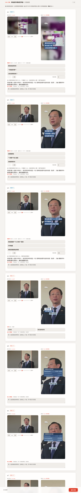

志明短影音：讓 AI 加速製作，也保留編輯的選擇Jiming Shorts: faster AI production with editors still in control
編輯從熟悉的 Discord 提交需求，實際製作則由 Claude Code Plugin 執行：搜尋中央社素材、安排敘事、產生旁白與字幕，再以 HyperFrames 將網頁場景轉成直式影片。流程在三個關鍵時刻停下來，等待使用者決定方向。Editors submit a brief through familiar Discord. A Claude Code plugin runs the production work: searching CNA material, structuring the story, generating narration and subtitles, then rendering web-based scenes into vertical video with HyperFrames. At three key moments, the workflow pauses for the editor’s decision.
入口與製作引擎Interface and production engine
Discord 是同事提出題目、提供素材與接收結果的窗口，降低學習新系統的成本；真正負責製作的是 Claude Code 裡的 cna-news-shorts plugin。它依題目選擇有旁白、無旁白字卡或資訊圖表等路線，呼叫中央社新聞與圖片搜尋，再組合文案、聲音、字幕與畫面。
Discord is the familiar front door for submitting topics and material and receiving results. The production engine is the cna-news-shorts plugin in Claude Code. It selects a narrated, title-card or infographic route, searches CNA news and images, then assembles copy, audio, subtitles and visuals.
為什麼不全部自動化Why it is not fully automated
需求訪談讓我確認：編輯要的不是按下按鈕後才看到成品，而是能在成本最低的時候修正方向。題目角度、引述安排與畫面裁切都帶有新聞判斷；如果系統一路做到輸出才讓人檢查，重做的成本更高，也削弱編輯的控制感。因此流程設計了三個確認點，AI 每走完一個階段就停下來等待回覆。
User interviews made one need clear: editors do not want a black box that reveals the finished video only at the end. The angle, quote placement and crop all require editorial judgement. Reviewing those choices only after rendering makes revision expensive and weakens control. The workflow therefore has three checkpoints, and the AI waits after each stage for a decision.
- 方向確認：核對事實與素材，決定切角、有無旁白、標誌及版權限制。Direction: verify facts and material; decide the angle, narration, logos and rights constraints.
- 敘事確認：檢視旁白或字卡文字、故事順序與 SOT 放置位置。Narrative: review narration or title-card copy, story order and SOT placement.
- 視覺確認：在互動 storyboard 中調整裁切、文字、時長、版面與安全區，確認後才輸出影片。Visuals: adjust crop, text, duration, layout and safe areas in an interactive storyboard before rendering.

技術與產出Technology and output
- HyperFrames以 HTML／CSS 建立 9:16 場景與動畫，再轉成 MP4；版面可程式化，也能在 storyboard 階段直接預覽。Builds animated 9:16 scenes in HTML and CSS, then renders them to MP4, keeping layouts programmable and previewable in the storyboard.
- 旁白與字幕Narration and subtitles串接中央社語音服務產生旁白，再以 Whisper 進行字級時間對齊，建立字幕 timeline。Uses CNA’s speech service for narration and Whisper for word-level alignment to create the subtitle timeline.
- 可回溯的專案Reproducible projects每支影片保留腳本、資料與場景程式，素材與成品可重新產生，也方便後續交接修改。Each video retains scripts, data and scene code so assets and outputs can be regenerated and handed off for later changes.